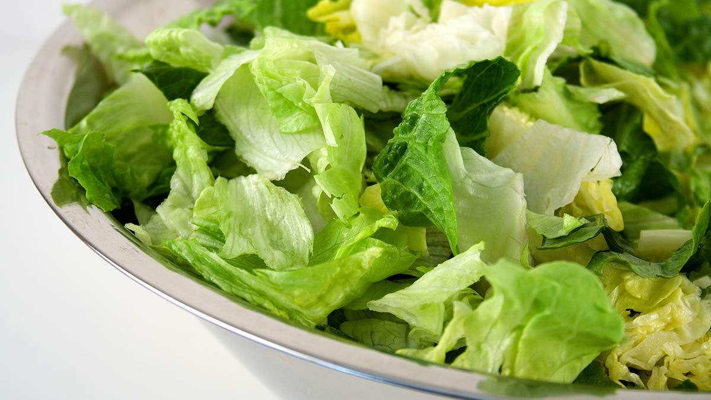

Hello, our names are Johanna Figueroa, Griscelda Diaz, Giovanna Gonzalez-Rojas, and Variah Ward and we are first year scholars at the SMASH Academy. The prototype that we developed was a serum that can determine wether your food is clean and safe to eat. The serum was meant to analyze any sort of E.Coli infection which may present itself in the food they are eating. Based on research, it was concluded that there are ways to remove the risk of attaining the E.Coli infection by just cleaning it well prior to cooking and then cook it thouroughly but a question we had was, How do people know if their food is safe to eat when they are just consuming produce without cooking it? In this scenario we decided to think of way to identify the bacteria within the food and we came up with the serum.
The serum we made is tasteless and does not harm your food.The way the serum works is that when you are about to consume any sort of produce such as lettuce, spinach, and etc. you take the pipette that is included in the serum and you take 10ml of the serum and place it in your food. The serum we designed is tastless and doesn't harm food in any way. If the bacteria is identified and the meal is not safe to eat it will turn dark pink, if it is safe to eat it will turn clear. This serum we came up with not only identifies the E.Coli bacteria but it also is beneficial for your safety and health. .
In the process of creating our prototype we went out asked people if they were willing to look at our prototype. When they agreed we showed them the first draft of our prototype and explained how it worked. In this process we took some of the feedback and asked how likely they were to buy this product. Here were some of our reviews...
"As a person who eats many salads, I would definitely love to use this product!” - Julie
“I would probably be more than happy to buy this product, especially if it would keep me healthy ” - Sigga